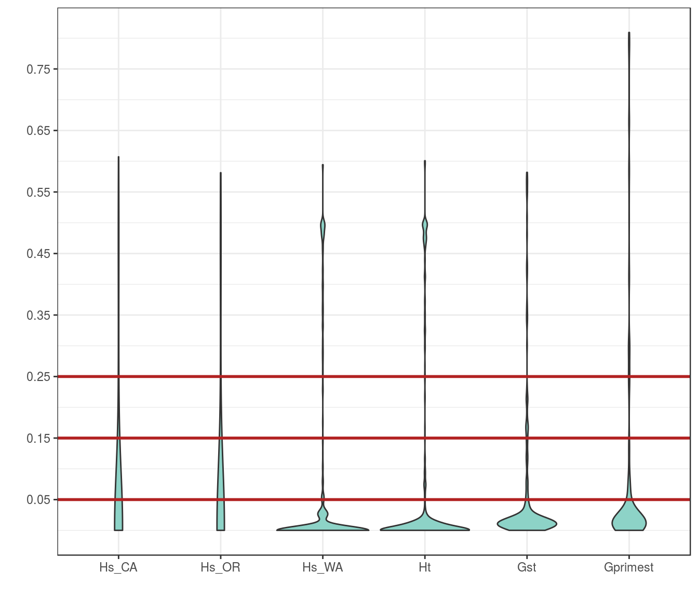

library(vcfR)
library(poppr)
library(ape)
library(RColorBrewer)rubi.VCF <- read.vcfR("prubi_gbs.vcf.gz")## Scanning file to determine attributes.
## File attributes:
## meta lines: 9460
## header_line: 9461
## variant count: 615
## column count: 103
##
Meta line 1000 read in.
Meta line 2000 read in.
Meta line 3000 read in.
Meta line 4000 read in.
Meta line 5000 read in.
Meta line 6000 read in.
Meta line 7000 read in.
Meta line 8000 read in.
Meta line 9000 read in.
Meta line 9460 read in.
## All meta lines processed.
## gt matrix initialized.
## Character matrix gt created.
## Character matrix gt rows: 615
## Character matrix gt cols: 103
## skip: 0
## nrows: 615
## row_num: 0
##
Processed variant: 615
## All variants processedA standard way to calculate population structure in population genetics is using the fixation index (\(F_{ST}\)) proposed by Sewall Wright (Wright, 1949, Wright (1978)).
The fixation index measures population differentiation due to genetic structure, and is based on the variance of the allele frequencies between populations. \(F_{ST}\) values can be calculated for any molecular marker.
The R package vcfR includes a function to calculate differentiation measures from VCF data. The function genetic_diff() includes options for Nei’s \(G_{ST}\) (Nei, 1973), including Hedrick’s \(G'_{ST}\) correction for high allelism (Hedrick, 2005) , as well as Jost’s \(D\) (Jost, 2008).
myDiff <- genetic_diff(rubi.VCF, pop.data$State, method = "nei")
knitr::kable(t(as.matrix(round(colMeans(myDiff[,c(3:10,13)], na.rm = TRUE), digits = 3))))| Hs_CA | Hs_OR | Hs_WA | Ht | n_CA | n_OR | n_WA | Gst | Gprimest |
|---|---|---|---|---|---|---|---|---|
| 0.048 | 0.054 | 0.059 | 0.062 | 62.179 | 44.25 | 72.943 | 0.056 | 0.084 |
The calculation of Nei´s \(G_{ST}\) and Hedrick´s \(G'_{ST}\) indicate that there is a low degree of population differentiation across states in the western USA. \(F_{ST}\) values have a range from 0 (no genetic structure) to 1 (complete population structure). (However, an unbiased estimate may be slightly negative.) Hedrick´s \(G'_{ST}\) index rescales Nei´s \(G_{ST}\) values into a range from 0 to 1 for loci with many alleles. These indices can be thought of as analogs to \(F_{ST}\) values.
While \(F_{ST}\) range from 0 to 1, they do not scale linearly. That is, two populations with an \(F_{ST}\) of 0.5 should not be interpreted as being 50% differentiated. Wright suggested the following guidelines for \(F_{ST}\) values (Wright, 1978):
These guidelines are valid for our \(G'_{ST}\) values as well. For a more extensive discussion on the interpretation of \(F_{ST}\) values, we recommend chapter 4 in Hartl & Clark (2007).
Both measurements of population differentiation for P. rubi show a moderate degree of differentiation among populations (Hedrick´s \(G'_{ST}\) = 0.084).
However, these results from the population differentiation calculation are obtained by estimating the mean for each of the indices in the function. Each variant has its own estimation for each index in the genetic_diff function. We can visualize the distribution of indices across all variant positions using a violin plot:
dpf <- melt(myDiff[,c(3:6,10,13)], varnames=c('Index', 'Sample'), value.name = 'Depth', na.rm=TRUE)## No id variables; using all as measure variablesp <- ggplot(dpf, aes(x=variable, y=Depth)) + geom_violin(fill="#8dd3c7", adjust = 2.8)
p <- p + xlab("")
p <- p + ylab("")
p <- p + theme_bw()
p <- p + scale_y_continuous(breaks=seq(0.05, 0.95, by=0.1))
p <- p + geom_hline(yintercept = c(0.05, 0.15, 0.25), color = "#B22222", lwd = 1)
p
The violin plot shows a high abundance of variants with low values for each index, indicating that the low values of population differentiation are common in our analysis. Nonetheless, we see a number of outlier variants in the high ends of the distribution. These variants represent sites in the genome under high differentiation. We can visualize these results by plotting the value of the index of interest (in this example, Hedrick´s \(G'_{ST}\)) against the position in the genome. These “Manhattan plots” allow visualization of differentiation along a portion of the genome:
plot(1:nrow(myDiff), myDiff$Gprimest, xlab = "", ylab = "", xaxt = "n", pch = 21, bg = myDiff$CHROM, yaxt='n')
abline(h=0)
title(ylab = expression("G'"[ST]))
abline(h=c(0.05, 0.15, 0.25), col = "#B22222")
axis(side=2, at=seq(0.05, 0.95, by=0.1), las=2)
title(xlab = "Position", line = 1)We observe that the majority of variants have very low values of Hedrick´s \(G'_{ST}\), as expected from previous results. However, there are positions in the genome with high Hedrick´s \(G'_{ST}\) values. Note however, that GBS data is very different than whole genome sequence data, as the variants that are obtained by GBS do not represent long stretches of the genome but only fragments scattered throughout the genome. We would need variant calls for a whole genome to find regions of divergence.
Hartl D., Clark A. 2007. Principles of population genetics. Sinauer Associates, Incorporated. Available at: http://books.google.com/books?id=SB1vQgAACAAJ
Hedrick PW. 2005. A standardized genetic differentiation measure. Evolution 59:1633–1638. Available at: http://dx.doi.org/10.1111/j.0014-3820.2005.tb01814.x
Jost L. 2008. \(G_{ST}\) And its relatives do not measure differentiation. Molecular Ecology 17:4015–4026. Available at: http://dx.doi.org/10.1111/j.1365-294X.2008.03887.x
Nei M. 1973. Analysis of gene diversity in subdivided populations. Proceedings of the National Academy of Sciences 70:3321–3323. Available at: http://www.pnas.org/content/70/12/3321.abstract
Wright S. 1949. The genetical structure of populations. Annals of Eugenics 15:323–354. Available at: http://dx.doi.org/10.1111/j.1469-1809.1949.tb02451.x
Wright S. 1978. Evolution and the genetics of populations. Vol. 4. variability within and among natural populations. University of Chicago Press, Chicago, IL, USA. Available at: http://www.press.uchicago.edu/ucp/books/book/chicago/E/bo3642015.html